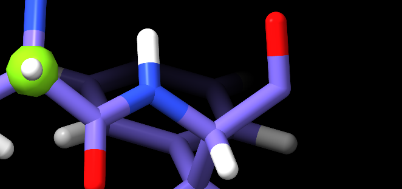
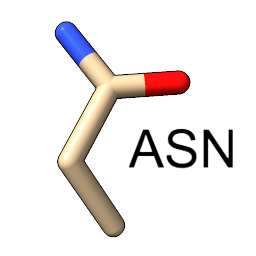

Getting Started¶
(NEW in 1.0b3: if you are reading this from within the ChimeraX Help browser, you may prefer trying out the :ref:`isolde_intro_tutorial` interactive tutorial.)
Starting ISOLDE¶
Assuming you already have ISOLDE installed (if not, you can do so via
Tools/More Tools… in the ChimeraX menu), then you can start it up via
Tools/General/ISOLDE or by typing isolde start in the command line. This
should yield a new floating panel looking something like this:
(NOTE: the ISOLDE panel is designed to be similar in size to the ChimeraX Log panel on most machines, and will “dock” there if dragged onto it. If working with a single display I recommend doing this.)
If you already have a model loaded, you’ll probably notice that it’s gained a few (but hopefully not too many) new features like those in the image below. If not, go ahead and load a model using the standard ChimeraX interface. If you have multiple models open, you can choose the one you want to work on using the “Working on:” drop-down menu at the top-left of the ISOLDE panel.
Basics of ISOLDE validation markup (sans map)
| a | Crosshairs denoting the pivot point (centre of rotation) of
the display. Red, green and blue point along the x, y and z
axes respectively. Under normal circumstances the centre of
rotation should remain in the middle of the screen - if for
any reason you find it stops behaving as expected, this
behaviour can be reinstated using the command
cofr center showpivot true. |
| b | This exclamation mark/spiral motif denotes a rotamer outlier (that is, a sidechain in an unlikely conformation). The more unlikely the conformation, the larger and redder the indicator becomes. Below and to the left you can see a less severe “iffy” rotamer. |
| c | The red trapezoids you see here are highlighting non-proline cis peptide bonds (where the amide hydrogen and carbonyl oxygen are pointing in the same direction). In the real world these are vanishingly rare (around 3 per 10,000 amino acid residues), and real ones tend to be heavily stabilised by surrounding packing/H-bond interactions (and hence are usually among the better-resolved sites in the molecule). A string of non-proline cis bonds on a flexible loop as seen here is essentially impossible. The less-rare proline cis bonds are similarly shown in green, and peptide bonds twisted more than 30 degrees from planar in yellow. |
| d,e | The protein backbone is not infinitely free to move, but has clearly preferred conformations that have been well characterised by studying high-resolution structures. The best-established method for characterising backbone conformation is via the Ramachandran plot, a plot of the phi (C-N-CA-C) and psi (N-CA-C-N) dihedral angles against each other. The probabilities of finding different (phi, psi) combinations have been mapped out in high detail for various groups of amino acids (MolProbity). While ISOLDE also provides a Ramachandran plot, the current probability score for each protein residue is mapped in real time to the colour of its alpha carbon (CA) atom as shown. Green denotes a “happy” residue, yellow is marginal (possible, but somewhat strained), and red is a serious outlier (still possible, but needs very strong support to justify it). |
(Note: The rotamer, peptide bond and Ramachandran markups described above
update automatically whenever the atomic coordinates change. As long as you have
ISOLDE installed, you can add them to any loaded model using the rama and
rota commands)
Preparing a model for simulation¶
(Note: if you just want to load up a model and maps ready to play with, just click the “Load demo” button in the top left of the ISOLDE panel)
While getting a clear picture of potential problems in a model is already somewhat useful, what ISOLDE is really all about is fixing them. To do that, it needs to be able to run molecular dynamics (MD) simulations. This in turn imposes a few requirements:
It must consist of residues that the MD engine knows about
That is, each residue must have a corresponding definition in the MD forcefield dictating all the details of bond lengths, angles, charges, atomic radii etc. As of version 1.0b3, ISOLDE supports protein, nucleic acid, most common sugars, water, metal ions, and approx. 13,000 of the more common ligands in the Chemical Components Dictionary. If your ligand is not recognised, you will need to provide AMBER-compatible parameters in the OpenMM ffXML format.
These can be conveniently converted from AMBER .mol2 and .frcmod files using ParmEd. One convenient option for preparing the .mol2 and .frcmod files themselves is Phenix AmberPrep.
An integrated ligand paramterisation framework is planned for a future release.
Each individual residue must be complete, including all hydrogens
(Yes, even water). In MD every atom plays a role - the engine needs every atom present to determine what sort of residue it’s dealing with. Nevertheless, in keeping with the fact that ISOLDE is about model building and refinement rather than traditional equilibrium MD, a few artificial arrangements are allowed. In particular, it is not necessary to “cap” dangling N- and C-termini (or 5’ and 3’ termini in nucleic acids) at chain breaks:

This dangling N-terminus is fine
.. as is this dangling C-terminus
Additionally, for all protein residues other than proline, sidechain truncations to CA, CB, CG or CD are allowed.
The most convenient way to add hydrogens (in a manner that follows the above rules) is by using the ChimeraX addh` command. Type
usage addhin the ChimeraX command line for complete instructions, but in most casesaddh hbond truewill give you the most desirable result.(Note: if you have metal ions present and your geometry is not perfect, you may find
addhrefusing to protonate one or more nearby peptide nitrogens. If you run into this issue try adding the argumentmetalDist 1.0to youraddhcommand.)In general, I recommend adding sidechains wherever possible - even if there is minimal density to support them, in the MD environment the contributions from each sidechain generally help in maintaining the geometry of surrounding residues. Sidechains can be conveniently rebuilt using the swapaa mouse mode provided by ChimeraX and found in the “Right Mouse” tab in the menu ribbon above the main GUI:
Right-clicking on a protein atom and dragging up/down will iterate through building all standard amino acid residues. Using this tool to simply “mutate” the residue to its own identity will give you a complete sidechain.
(IMPORTANT NOTE: Never perform edits that add or remove atoms while a simulation is running)
Alternative conformations (altlocs - that is, the same atom in two or more different places) are not currently supported. This is usually not a problem, since at the resolutions ISOLDE can help the most altlocs aren’t generally resolvable in the data anyway!
Adding maps¶
The primary use of ISOLDE is of course the fitting and refinement of an atomic model into one or more experimental maps. This is achieved via an interactive implementation of molecular dynamics flexible fitting (MDFF). In brief, MDFF converts your map into a field of potential energies overlaid on a molecular dynamics simulation, with each feeling a force proportional to the energy gradient at its current position. In effect, this causes atoms to “fall” into the high-density regions of the map.
ISOLDE is designed with the aim of seamless operability between direct real-space maps (e.g. as generated from cryo-EM experiments) and maps calculated from reciprocal-space data (typically derived from x-ray crystallography). Depending on your needs, three general types of maps are supported as described below, and a model may be associated with any combination (and any number, memory permitting) of these map types.
Real-space maps¶
(NOTE: within ChimeraX, you may prefer to familiarise yourself with the use of real-space maps in the interactive :ref:`bulk_fitting_tutorial` tutorial.)
Any real-space map format recognised by ChimeraX can be used as a MDFF potential by ISOLDE with a few simple steps. Simply load your model, e.g.
open 6eyd; open 3983 from emdb
If the model and map are not perfectly aligned, you can easily obtain an
optimised rigid-body fit using ChimeraX’s fitmap command.
fitmap #1 inMap #2 moveWholeMolecules false
Once aligned, the map may be associated with the model either by using the “Associate real-space map with current model” button on the ISOLDE “Sim settings” tab, or
clipper associate #2 toModel #1
(IMPORTANT NOTE: rigid-body fitting of the model into the map must be done BEFORE running “clipper associate”.)
This should change your view of the model and map from something like this:

to a visualisation mode similar to the traditional crystallographic view:

Default Clipper/ISOLDE “spotlight” model/map view. The map appears as a
sphere of density around the centre of rotation. Residues with atoms within
the spotlight radius have their atoms shown; the remainder of the molecule
is shown as a cartoon. You can adjust the spotlight radius using the command
clipper spotlight radius <radius> - but keep in mind that radii much larger
than about 20Å will cause noticeable lag in navigation.
Upon registration, ISOLDE automatically registers the map as a MDFF potential. The coupling constant (defining how strongly the map “pulls” on atoms) is automatically set by analysis of the gradients in the region close to the atomic model.
X-ray maps (or other maps calculated from Fourier coefficients)¶
An x-ray crystallography experiment yields a set of measured intensities corresponding to the amplitude component of the Fourier transform of the electron density in the crystal environment. In order to generate a real-space map, the amplitudes must be combined with a matching set of phases. The core challenge in crystallography is that the original phase information is not measurable, and hence estimates may be obtained by other means. Initial phases are typically obtained by molecular replacement with a close homologue, and/or anomalous scattering by one or more types of heavy atom in the crystal. These are then improved by building and refining your model into the map - as the quality of the model improves, the quality of the map improves, allowing further improvement to the model, etc..
Initial solution of the phase problem (e.g. with the aid of Phaser) and, if necessary, building of as much of the model as possible using tools like phenix.autobuild should already have happened before you load your model into ISOLDE. At this point, you have two choices:
- Use “live” maps calculated directly from your model and the experimental amplitudes (preferred); or
- Use “static” maps derived from pre-calculated amplitudes and phases (e.g. as output from phenix.refine or phenix.maps).
Both options have their own pros and cons, and are described in detail below. In either case, the input is an MTZ file. ISOLDE will automatically generate live or static maps (or a combination of both types) depending on what it finds in the loaded file. Crystallographic maps may be added to the model currently selected in ISOLDE using the “Load crystallographic dataset” button, or added to any atomic model using a command such as:
open reflections.mtz structureModel #1
Multiple crystallographic datasets may be associated with a single model, as long as the space group and cell dimensions match. Maps will be generated for each data column recognised by the Clipper plugin. Any unwanted maps may be safely closed via ChimeraX’s model panel:
The ChimeraX model panel showing six crystallographic maps and one non- crystallographic map associated with an atomic model. The unwanted maps may be closed by selecting their entry in the tree then clicking the “Close” button at top right. You can close an entire crystallographic dataset by selecting the corresponding entry with name starting “Crystallographic maps”.
Static (pre-calculated) crystallographic maps¶
(WARNING: in many refinement packages (including PHENIX) the default behaviour is to include the free reflections when generating maps for visualisation and manual model building. By Parseval’s theorem this is equivalent in effect to including these reflections when refining in reciprocal space. While this may be OK when changing only a small fraction of the model, a typical MDFF session re-fits every atom to the map. While there is still some argument as to the final effect of this, using maps including the free set WILL render R_free and R_free-R_work unreliable as measures of the quality of fit. Unfortunately there is no way to determine whether an arbitrary set of amplitudes and phases includes the free set or not, so it is up to you to ensure that free reflections are NOT included. A template for a suitable phenix.maps input file is provided below. For the above reasons, all static maps will be disabled as MDFF potentials by default, and must be explicitly enabled for simulation using the controls under the “Show map settings dialogue” button.)
The Clipper plugin uses some very simple heuristics to decide on the treatment of a given set of amplitudes and phases. In brief, if the name of the amplitude column is “F” or “FWT” or contains a 2, the resulting map will be treated as standard map (that is, displayed with a single positive contour and used as a MDFF potential). Any map for which the amplitude column name is “FC” or contains “CALC” (case-insensitive) will be treated as an Fcalc map and hidden by default. Any column name not matching the above criteria will result in a difference map (equal positive and negative displayed contours, not used for MDFF).
Live crystallographic maps (EXPERIMENTAL)¶
(NOTE: This feature is still experimental and undergoing further development. While it works well given good-quality data, its handling of outliers and pathologies such as ice rings, beam-stop shadows, anisotropy etc. is minimal to non-existent. If the R-factors calculated are more than ~5% higher than those calculated by your favourite refinement package, you may be safer sticking with pre-calculated maps for now.)
If your MTZ file contains experimental intensities (I/sigI) or amplitudes (F/sigF), then a set of live sigma-a weighted crystallographic maps will be generated directly from the combination of these with phases calculated from the atomic model. Unlike with the pre-calculated maps, any changes to the atomic model automatically triggers a recalculation of all live maps. This happens in the background, with minimal effect on graphical performance other than a slight pause when the visualisation of the new maps is loaded in.
(NOTE: live updating can be toggled using the “Live crystallographic map calculation” checkbox that appears on the “Sim settings” tab when a live dataset is associated with the selected model)
(NOTE: live map updates do not update the MDFF potential while a simulation is running. The potential will only change once the simulation is finished.)
Working directly with the experimental data has the distinct advantage that ISOLDE can know and control exactly what goes into each map. Three maps will be generated for visualisation purposes:
- a standard 2mFo-DFc map
- a 2mFo-DFc map with a moderate amount of B-factor sharpening or smoothing applied (with the amount of sharpening/smoothing decided heuristically based on resolution)
- a mFo-DFc difference map
Each of the above maps is generated using the full set of reflections, and for this reason is blocked from use as a MDFF potential. Instead, ISOLDE also creates a special map (helpfully named “(LIVE) MDFF potential”) optimised for use as a MDFF potential (including exclusion of the free set). This map is hidden by default, but can be displayed via the Model Panel at any time.
phenix.maps template¶
maps {
input {
pdb_file_name = None # Replace this with the name of your pdb file
reflection_data {
file_name = None # Replace this with the file containing your structure
# factors (e.g. 1xxy-sf.cif or reflections.mtz)
labels = None
high_resolution = None
low_resolution = None
outliers_rejection = True
french_wilson_scale = True
french_wilson {
max_bins = 60
min_bin_size = 40
}
sigma_fobs_rejection_criterion = None
sigma_iobs_rejection_criterion = None
r_free_flags {
file_name = None
label = None
test_flag_value = None
ignore_r_free_flags = False
}
}
}
output {
directory = None
prefix = None
job_title = None
fmodel_data_file_format = mtz
include_r_free_flags = False
}
scattering_table = wk1995 it1992 *n_gaussian neutron electron
wavelength = None
bulk_solvent_correction = True
anisotropic_scaling = True
skip_twin_detection = False
omit {
method = *simple
selection = None
}
map_coefficients {
map_type = 2mFo-DFc
format = *mtz phs
mtz_label_amplitudes = 2FOFCWT
mtz_label_phases = PH2FOFCWT
fill_missing_f_obs = True
sharpening = False
sharpening_b_factor = None
exclude_free_r_reflections = True # IMPORTANT: keep this set to True
isotropize = True
}
map_coefficients {
map_type = 2mFo-DFc
format = *mtz phs
mtz_label_amplitudes = 2FOFCWT_sharp
mtz_label_phases = PH2FOFCWT_sharp
fill_missing_f_obs = True
sharpening = True
sharpening_b_factor = 80 # Reasonable for most ~3A maps
exclude_free_r_reflections = True # IMPORTANT: keep this set to True
isotropize = True
}
map_coefficients {
map_type = mFo-DFc
format = *mtz phs
mtz_label_amplitudes = FOFCWT
mtz_label_phases = PHFOFCWT
fill_missing_f_obs = TRUE
sharpening = False
sharpening_b_factor = None
exclude_free_r_reflections = True # IMPORTANT: keep this set to True
isotropize = True
}
}